조경기능사 (2006-01-22 기출문제)
1과목: 조경일반
1. 다음 중 경관의 우세 요소가 아닌 것은?
- 형태
- 선
- 소리
- 텍스쳐
(정답률: 68%)

2. 다음 중 풍경식 정운에서 요구하는 계단의 재료로 가장 적당한 것은?
- 콘크리트 계단
- 벽돌 계단
- 통나무 계단
- 인조목 계단
(정답률: 93%)
3. 옥상정원의 환경조건에 대한 설명 중 옳지 않은 것은?
- 토양 수분의 용량이 적다.
- 토양 온도의 변동 폭이 크다.
- 양분의 유실속도가 늦다.
- 바람의 피해를 받기 쉽다.
(정답률: 88%)
4. 일본의 독특한 정원양식으로 여행 취미의 결과 얻어진 풍경의 수목이나 명승고적, 폭포, 호수, 명산계곡 등을 그대로 정원에 축소시켜 감상하는 것은?
- 축경원
- 평정고산수식정원
- 회유임천식정원
- 다정
(정답률: 65%)
5. 개인주택의 정원이나 아파트 단지 등 공동주택의 조경은 다음 중 어느 곳에 해당하는가?
- 공원
- 기타시설
- 주거지
- 위락,관광시설
(정답률: 90%)
6. 다음과 같은 특징이 반영된 정원은?
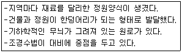
- 중국정원
- 인도정원
- 영국정원
- 독일풍경식정원
(정답률: 86%)
7. 고려시대에 궁권내의 조경을 담당하던 관청은?
- 장원서
- 내원서
- 상림원
- 화림원
(정답률: 86%)
8. 다음 경관의 유형 중 초점경관에 대한 설명으로 옳은 것은?
- 지형 지물이 경관에서 지배적인 위치를 지는 경관
- 주위 경관 요소들에 의하여 울타리처럼 둘러싸인 경관
- 좌우로의 시선이 제한되고 중앙의 한 점으로 모이는 경관
- 외부로의 시선이 차단되고 세부적인 특성이 지각되는 경관
(정답률: 82%)
9. 조경 계획·설계의 과정 중 “기본 계획” 단계에서 다루어져야 할 문제가 아닌 것은?
- 일정토지를 계획함에 있어 어떠한 용도로 이용할 것인가?
- 지역간 혹은 지역 내에 어떠한 동선 연결 체계를 가질 것인가?
- 하부구조시설들을 어디에 어떤 체계로 가설할 것인가?
- 조사 분석된 자료들은 각각 어떤 상호관련성과 중요성을 지니는가?
(정답률: 44%)
10. 가로1m X 세로10m의 공간에 H0.4m X W0.5 규격의 철쭉으로 생울타리를 만들려고 하면 사용되는 철쭉의 수량은?
- 약 20주
- 약 40주
- 약 80주
- 약 120주
(정답률: 62%)
11. 다음과 같은 조건을 갖춘 공원으로 가장 적당한 것은?
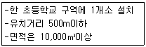
- 어린이 공원
- 근린공원
- 체육공원
- 도시자연공원
(정답률: 70%)
12. 다음 조경 계획 과정 가운데 가장 먼저 해야 하는것은?
- 기본설계
- 기본계획
- 실시설계
- 자연환경 분석
(정답률: 81%)
13. 다음 중 방화식재로 사용하기 적당한 수종으로 짝지어진 것은?
- 광나무, 식나무
- 피나무, 느릅나무
- 태산목, 낙우송
- 아카시아, 보리수
(정답률: 71%)
14. 우리나라 전통 조경의 설명으로 옳지 않은 것은?
- 신선 사상에 근거를 두고 여기에 음양 오행설이 가미 되었다.
- 연못의 모양은 조롱박형, 목숨수자형, 마음심자형 등 여러 가지가 있다.
- 네모진 연못은 땅, 즉 음을 상징하고 있다.
- 둥근 섬은 하늘, 즉 양을 상징하고 있다.
(정답률: 88%)
15. 조경의 대상지별 구분 중 기타 시설에 해당되지 않는 것은?
- 도로
- 학교
- 광장
- 휴양지
(정답률: 63%)
2과목: 조경재료
16. 바탕재료의 부식을 방지하고 아름다움을 증대시키기 위한 목적으로 사용하는 재료는?
- 니스
- 피치
- 벽토
- 회반죽
(정답률: 84%)
17. 다음 중 목재의 건조에 관한 설명으로 틀린 것은?
- 건조기간은 자연건조시는 인공건조에 비해 길고, 수종에 따라 차이가 있다.
- 인공건조 방법에는 증기건조, 공기가열건조, 고주파건조법 등이 있다.
- 자연건조시 두께 3cm의 침염수는 약 2~6개월 정도 걸리고 활엽수는 그 보다 짧게 걸린다.
- 목재의 두꺼운 판을 급속히 건조할 경우에는 고주파건조법이 효과적이다.
(정답률: 78%)
18. 다음 중 이식하기 가장 어려운 수종은?
- 가이즈까 향나무
- 쥐똥나무
- 목련
- 명자나무
(정답률: 74%)
19. 다음 중 금속재료의 특성이 바르게 설명된 것은?
- 소재 고유의 광택이 우수하다
- 소재의 재질이 균일하지 않다.
- 재료의 질감이 따뜻하게 느껴진다.
- 일반적의로 산에 부식되지 않는다.
(정답률: 81%)
20. 다음 석재의 가공방법 중 표면을 가장 매끈하게 가공 할 수 있는 방법은?
- 혹두기
- 정다듬
- 잔다듬
- 도드락다듬
(정답률: 81%)
21. 조경에서 수목의 규격표시와 기호 및 단위가 알맞게 짝지어진 것은?
- 수관폭-R-cm
- 수고-D-m
- 흉고직경-B-cm
- 지하고-BH-m
(정답률: 39%)
22. 다음 조경재료 중에서 자연재료가 아닌 것은?
- 자연석
- 지피식물
- 초화류
- 식생매트
(정답률: 91%)
23. 다음 중 골프장에서 잔디와 그린이 있는 곳을 제외하고 모래나 연못 등과 같이 장애물을 설치한 곳을 가리키는 것은?
- 페어웨이
- 하자드
- 벙커
- 러프
(정답률: 60%)
24. 인공 폭포, 수목 보호판을 만드는 데 가장 많이 이용되는 제품은?
- 식생 호안 블록
- 유리블록 제품
- 콘크리트 격자 블록
- 유리섬유 강화 플라스틱
(정답률: 92%)
25. 조경수목의 선정시 꽃의 향기가 주가 되는 나무가 아닌 것은?
- 함박꽃나무
- 서향
- 태산목
- 목서류
(정답률: 71%)
26. 다음 중 꽃이 먼저 피고, 잎이 나중에 나는 특성을 갖는 수목이 아닌 것은?
- 개나리
- 산수유
- 수수꽃다리
- 백목련
(정답률: 71%)
27. 해초풀 물이나 기타 전 .접착제를 사용하는 미장재료는?
- 벽토
- 회반죽
- 시멘트 모르타르
- 아스팔트
(정답률: 72%)
28. 퇴적암의 일종으로 판모양으로 떼어낼 수 있어 디딤돌, 바닥포장재 등으로 쓸 수 있는 것은?
- 화강암
- 안산암
- 현무암
- 점판암
(정답률: 69%)
29. 다음 수종 중 관목에 해당하는 것은?
- 백목련
- 위성류
- 층층나무
- 매자나무
(정답률: 53%)
30. 다음의 경계석 재료 중 잔디와 초화류의 구분에 주로 사용하며 곡선처리가 가장 용이한 경제적인 재료는?
- 콘크리트 제품
- 화강석 재료
- 금속재 제품
- 플라스틱 제품
(정답률: 74%)
31. 다음 중 열매를 감상하기 위하여 식재하는 수종이 아닌 것은?
- 피라칸사스
- 석류나무
- 조팝나무
- 팥배나무
(정답률: 72%)
32. 표면수를 배수시키기 위해 부지의 둘레나 원로가에 설치하는데 적합한 토관은?
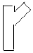
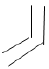
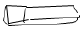
(정답률: 59%)
33. 다음 중 뿌리뻗음이 가장 웅장한 느낌을 주고 광범위하게 뻗어가는 수종은?
- 소나무
- 느티나무
- 목련
- 수양버들
(정답률: 72%)
34. 다음 중 칠공사에 사용되는 방청용도료에 해당하지 않는 것은?
- 에멀션페인트
- 광명단
- 징크로메이트계
- 위시프라이머
(정답률: 43%)
35. 다음 중 붉은색(홍색)의 단풍이 드는 수목들로 구성된 것은?
- 낙우송, 느티나무, 백합나무
- 칠엽수, 참느릅나무, 졸참나무
- 감나무, 화살나무, 붉나무
- 잎갈나무, 메타세콰이어, 은행나무
(정답률: 87%)
3과목: 조경 시공 및 관리
36. 추위로 줄기 밑 수피가 얼어터져 세로 방향의 금이 생겨 말라죽는 경우가 생기는 수종은?
- 단풍나무
- 은행나무
- 버즘나무
- 소나무
(정답률: 67%)
37. 아래 그림에서 (A)점과 (B)점의 차는 얼마인가?(단, 등고선 간격은 5m이다. )
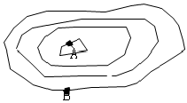
- 10m
- 15m
- 20m
- 25m
(정답률: 80%)
38. 다음 중 보통분으로 뿌리분을 뜨고자 할 때 A부분의 적당한 크기는?
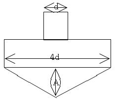
- 1/4d
- d
- 2d
- 1/2d
(정답률: 59%)
39. 다음 중 잡석지정 방법 중 가장 적당한 것은?
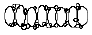
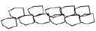
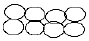
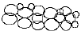
(정답률: 55%)
40. 토공사에서 흐트러진 상태의 토양변화율이 1.1일때 토공사에서 터파기량이 10㎥, 되메우기량이 7㎥ 일 때 잔토처리량은?
- 3㎥
- 3.3㎥
- 7㎥
- 17㎥
(정답률: 80%)
41. 설계도의 종류 중에서 3차원의 느낌이 가장 실제의 모습과 가깝게 나타나는 것은?
- 입면도
- 평면도
- 투시도
- 상세도
(정답률: 77%)
42. 추운지방에서나 엄동기에 콘크리트 작업을 할 때 시멘트에 무엇을 섞으면 굳어지는 속도가 촉진되는가?
- 염화칼슘
- 페놀
- 물
- 석회석
(정답률: 84%)
43. 다음 중 잔디밭의 넓이가 165m2 (약 50평) 이상으로 잔디의 품질이 아주 좋지 않아도 되는 골프장의 러프지역, 공원의 수목지역 등에 많이 사용하는 잔디 깎는 기계는?
- 핸드모우어
- 그린모우어
- 로타리모우어
- 갱모우어
(정답률: 72%)
44. 소나무나 오엽송 등의 높은 위치에 가지를 전정하거나 열매를 채취할 경우 사용하는 전정가위는?
- 갈쿠리 전정가위(고지가위)
- 조형 전정가위
- 대형 전정가위
- 순치기 가위
(정답률: 86%)
45. 뿌리돌림의 필요성을 설명한 것으로 거리가 먼 것은?
- 이식적기가 아니 때 이식할 수 있도록 하기 위해
- 크고 중요한 나무를 이식하려 할 때
- 개화결실을 촉진시킬 필요가 없을 때
- 건전한 나무로 육성할 필요가 있을 때
(정답률: 75%)
46. 다음 중 수목을 식재할 경우 수간감기를 하는 이유로 틀린 것은?
- 수간으로부터 수분증산 억제
- 잡초 발생 방지
- 병해충 방지
- 상해방지
(정답률: 81%)
47. 다음 중 소형고압블록의 특징으로 틀린 것은?
- 재료의 종류가 다양하다.
- 시공과 보수가 어렵다.
- 보도용과 차도용으로 구분하여 사용한다.
- 내구성과 강도가 좋다.
(정답률: 80%)
48. 다음 중 가뭄방제법으로 가장 거리가 먼 것은?
- 관수 및 토양 갈아엎기
- 퇴비 및 짚 깔아주기
- 줄기의 수피에 새끼감기 및 해가려주기
- 가지의 시든 잎 제거하기
(정답률: 65%)
49. 다음 중 파종잔디 조성에 관한 설명으로 잘못된 것은?
- 1ha당 잔디종자는 약 50~150kg정도 파종한다.
- 파종시기는 난지형 잔디는5~6월 초순 경 ,한지형 잔디는 9~10월 또는 3~5월경을 적기로 한다.
- 종방향, 횡방향으로 파종하고 충분히 복토한다.
- 토양 수분 유지를 위해 폴리에틸렌필름이나 볏집, 황마천, 차광막 등으로 덮어준다.
(정답률: 42%)
50. 다음 중 잎이나 가지에 붙어 즙액을 빨아먹어 잎이 황색으로 변하게 되고 2차적으로 그을음병을 유발 시키며, 감나무, 동백나무, 호랑가시나무, 사철나무, 치자나무 등에 공통적으로 발생하기 쉬운 충해는?
- 흰불나방
- 측백나무 하늘소
- 깍지벌레
- 진딧물
(정답률: 61%)
51. 흙을 굴착하는데 사용하는 것으로 기계가 서 있는 위치보다 높은 곳의 굴삭을 하는데 효과적인 토공 기계는?
- 모터그레이더
- 파워셔블
- 드래그라인
- 크램셜
(정답률: 72%)
52. 돌이 풍화·침식되어 표면이 자연적으로 거칠어진 상태를 뜻하는 것은?
- 돌의 뜰녹
- 돌의 절리
- 돌의 조면
- 돌의 이끼바탕
(정답률: 53%)
53. 다음 기구 중 수목의 흉고직경을 측정할 때 사용하는 것은?
- 경척
- 덴드로메타
- 와이제측고기
- 윤척
(정답률: 67%)
54. 다음 중 단면도, 입면도, 투시도 등의 설계도면에서 물체의 상대적은 크기(기준)를 느끼기 위해서 그리는 대상이 아닌 것은?
- 수목
- 자동차
- 사람
- 연못
(정답률: 75%)
55. 다음 중 땅깍기 할 때 단단한 바위의 경우 비탈면의 알맞은 기울기는?
- 1:0.3~1:0.8
- 1:0.5~1:1.2
- 1:1.0~1:1.5
- 1:1.5~1:2.0
(정답률: 53%)
56. 다음 중 가시 산울타리용으로 쓰이는 수종이 아닌 것은?
- 탱자나무
- 쥐똥나무
- 호랑가시나무
- 찔레나무
(정답률: 53%)
57. 다음 중 ‘가’, ‘나’에 가장 적당한 것은?
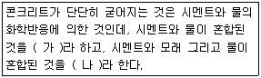
- 가-콘크리트, 나-모르타르
- 가-모르타르, 나-콘크리트
- 가-시멘트레이스트, 나-모르타르
- 가-모르타르, 나-시멘트페이스트
(정답률: 65%)
58. 옹벽공사시 뒷면에 물이 고이지 않도록 몇 ㎡마다 배수구 1개씩 설치하는 것이 좋은가?
- 1㎡
- 3㎡
- 5㎡
- 7㎡
(정답률: 74%)
59. 다음 중 수목의 굵은 가지치기 요령 중 가장 거리가 먼 것은?
- 잘라낼 부위는 가지의 밑둥으로부터 10~15cm 부위를 위에서부터 밑까지 내리 자른다.
- 잘라낼 부위는 아래쪽에 가지굵기의 1/3정도 깊이 까지 톱자국을 먼저 만들어 놓는다.
- 톱을 돌려 아래쪽에 만들어 놓은 상처보다 약간 높은 곳을 위로부터 내리 자른다.
- 톱으로 자른 자리의 거친 면은 손칼로 깨끗이 다듬는다.
(정답률: 66%)
60. 다음 중 벽돌구조에 대한 설명으로 옳지 않은 것은?
- 표준형 벽돌의 크기는 190mmX90mmX57mm이다.
- 이오토막은 네덜란드식, 칠오토막은 영식쌓기의 모서리 또는 끝부분에 주로 사용된다.
- 벽의 중간에 공간을 두고 안팎으로 쌓는 조적벽을 공간벽이라고 한다.
- 내력벽에는 통줄눈을 피하는 것이 좋다.
(정답률: 66%)